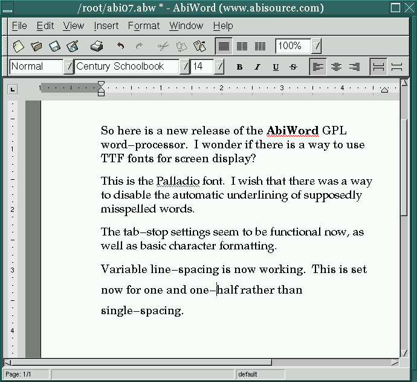

![[ TABLE OF CONTENTS ]](../gx/indexnew.gif)
![[ FRONT PAGE ]](../gx/homenew.gif)


There is a tension in the Linux community between developers, who tend to be comfortable with their text editors and mark-up formatting systems, and users who want the sort of word processor common in the Mac and Windows worlds. This tension periodically sparks discussions in newsgroups and mailing lists, but an Open Source project has yet to produce a finished, fully usable word processor. The release of GPLed source last year for the Maxwell word processor failed to draw enough programmer interest to result in an ongoing and dynamic project to complete the program, possibly because of Maxwell's reliance on the Motif widget set.
Of course the commercial products StarOffice, WordPerfect and Applix Words are available for Linux. These are large applications; I'm under the impression that many users desire something quick to load and less complex, a word processor suitable for formatted business letters and other shorter documents. Another factor mitigating against the above commercial applications is the lack of community involvement. I've noticed that closed-source applications don't seem to generate mailing list and newsgroup postings as readily as do various free software projects. I rarely write directly to developers involved in the various free software projects I follow, but I know who they are and if the need happened to arise I wouldn't hesitate to make contact. Free software projects typically attract a secondary level of co-developers and skilled users who often frequent the various net forums answering questions and providing assistance.
It has been suggested that writing a good word processor is such a difficult task that it is beyond the capabilities of an Open Source development process. More likely, I think, is that a large enough group of programmers ardently desiring such an application just hasn't ever coalesced. Perhaps this sort of project is suited for a hybrid approach, one involving both a commercial firm and independent free-software programmers. AbiSource, Inc. is giving this idea a try.
Is it possible for an ambitious Open Source project to thrive and produce useful results under the sponsorship of a for-profit corporation? The Mozilla project is one such undertaking. After over a year of source availability much has been accomplished but the current binary releases, while intriguing, aren't yet as usable as the current releases of Netscape Communicator. The bulk of the new code still seems to be primarily coming from paid Netscape programmers. This might indicate that free software programmers prefer working on projects which aren't under a corporate aegis; another possible reason is the sheer size and complexity of the Mozilla code-base. Many programmers might lack the time and/or skill to comprehend such a project, and starting from scratch with a relatively new widget-set (GTK) must further increase the difficulty.
The programmers who started AbiSource, Inc. don't seem to be daunted by the dearth of efforts to mix business with Open Source from the very beginning of a project. Mozilla already had a massive source tree when its development was opened to the outside world last year, while Eric Allman's Sendmail business followed years of non-profit and open development; Eric had written a proven and widely-used piece of software before he formed a company to provide service for corporate users of Sendmail.
It should be kept in mind that these are still early days in the intersection of the free software and business worlds. Another year or so of experimentation with the various trials and ventures ought to make evident which approaches have managed to make money without driving away the developers and users in the free software community. AbiSource is a new company gambling that its ideas will prove viable and useful.
AbiSource's goal is to provide basic Open Source business applications for Linux, Windows, and BeOS users. Their idea is to give their applications away and charge for service and customization. Abi's first product is a GTK-based word processor, AbiWord. Outside programming help is welcomed and all of the usual paraphernalia of an Open Source project, such as mailing lists, CVS servers, and bug-reporting mechanisms, are available from the AbiSource web-page, http://www.abisource.com. The number of non-Abi volunteer programmers contributing code isn't mentioned on the site, but I believe that the completion of the BeOS port was largely due to outside Be programmers.
It's interesting that while the source code is under the GPL and thus freely available and modifiable, the names AbiSource and AbiWord are copyrighted. This is intended to protect whatever reputation and name-recognition the company might gain if their services become popular.
The most significant difference between AbiWord and nearly every other word processor available is the nature of the native file format. An *.abw file is written in XML and thus is also in ASCII format; the files can be read by any text editor. This is quite a break with word processor tradition and ensures that when you write a document with AbiWord you don't run the risk of being strictly tied to one particular word processor, which may not even run on machines five years from now. AbiWord can also save in the HTML and RTF formats, both of which are accessible with word processors such as MS-Word and WordPerfect. Due to limitations of HTML and RTF some formatting information is lost (such as the specific fonts used), but attributes such as bold and italic font styles and tab-settings are retained. If XML really does become a widely-used and open data-format (as its proponents predict) AbiSource might be in a good position to gain users and clients.
Many Linux users would like to be able to read MS-Word files with a Linux word processor. StarOffice, Applix Words, and WordPerfect all come with filters for the ubiquitous format; these filters usually work well with simple documents but more complex documents with embedded macro routines are another matter. AbiSource has chosen to avoid this particular can of worms; the RTF support should ensure that simply formatted files can be exchanged with Word users.
Linux users and developers in academia, with its strong unix traditions, have less of a need to be able to deal with MS-Word files than do the growing numbers of users coming to Linux from the "real" world, the larger world of commerce and corporations. Until the nearly universal usage of the MS-Word format for even the simplest documents begins to decline, alternative word processors will have to struggle to gain market-share. The fact that AbiWord is free should be of some help, though there still exists a common idea that free software is somehow suspect.
With the release of 0.7 (and most recently 0.7.1) AbiSource began to make binaries freely available on their web-site and have even pressed CDs which are available at a nominal price. This would seem to indicate that the program has reached a state of usability. I've been trying out the latest release; it's serviceable but basic and seems to be stable. I've not had it crash once. Few of the paragraph and document formatting functions have been enabled at this point, but font-changes and tab-settings work well. Zooming (enlarging the apparent size of the document on the screen) is enabled. The fonts can be changed either from a drop-down selector or with the spiffy GTK font-selector dialog-box. Here is a screenshot of version 0.7.1:

Looks like a normal word processor, doesn't it? Notice the red squiggly lines beneath certain words; this is supposed to indicate misspelled words. I have yet to find a way to turn it off. AbiWord comes with its own dictionary, but there doesn't yet seem to be a way to spell-check a document. Many of the menu-items are non-functional. Clicking on one of these summons a message-box stating that "the [function] dialog hasn't been implemented yet" followed by a pointer to lines in the source file which need the work, a thoughtful hint to a prospective code contributor.
If you give AbiWord a try, create a new file with a few lines of content, save it, then examine the resultant *.abw file with a text editor. Your content will be readable in this file, with surrounding XML tags indicating formatting specifications. As an example, here is the last line of the file used in the above screenshot:
<p props="line-height:1.5; margin-right:1.8125in">
<c props="font-family:Century Schoolbook; font-size:14pt; font-style:normal;
font-weight:normal">Variable line-spacing is now working. This is set now for
one and one-half rather than single-spacing.</c></p>
As you can see, the formatting tagging is comprehensible and could even be modified "by hand", in an editor rather than in the word processor. The actual content is accessible, a welcome difference from the usual binary word processor format in which the content is immersed in a sea of unreadable binary symbols.
The source distribution contains some interesting examples of *.abw files but these files were omitted from the binary packages.
In the Linux version, and I assume in the Windows and BeOS versions as well, printing is handled by the existing print system. On my system the file seems to be converted to Postscript format, then is passed to Ghostscript for processing by my print filter. AbiWord uses standard Postscript Type 1 fonts, but for some reason they need to be located in an Abi-specific directory. Several standard fonts are supplied with AbiWord, but more can be added as long as both the *.afm and the *.pfa files are supplied for each font. As in standard X Windows font installation, the index file fonts.dir must be updated as well.
In its current state AbiWord is useful for writing short, simply formatted documents, but lack of paragraph and document formatting templates, as well as the lack of functional image insertion, limit its scope. It seems to me that AbiSource has developed the base structure of the word processor solidly, and the hooks for completion of the feature-set are in place in skeletal form and just need to be fleshed out. The decision to use an XML file format should appeal to users who would like to use something other than the exclusive binary file-formats of typical word processors. Whether AbiSource will be able to keep the development process alive until revenue is generated remains to be seen, but at least the source code will remain available should they fail.